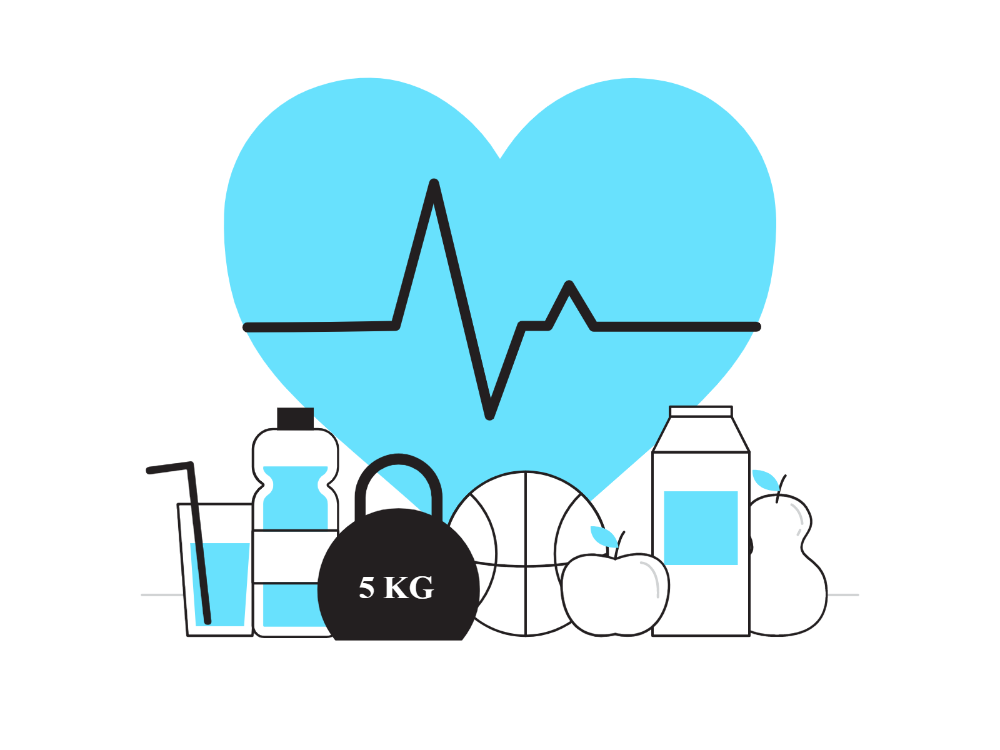
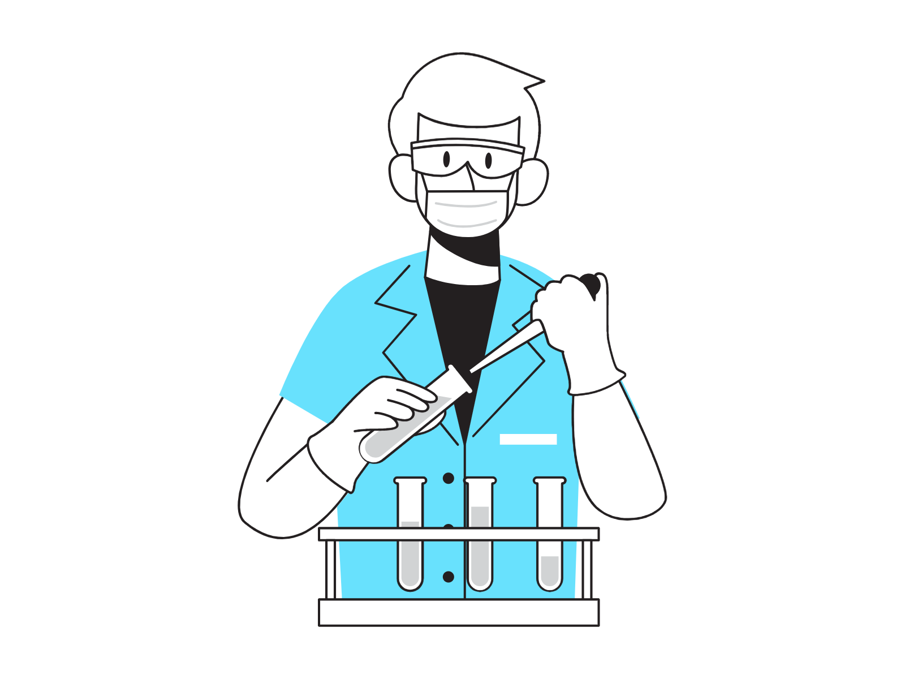
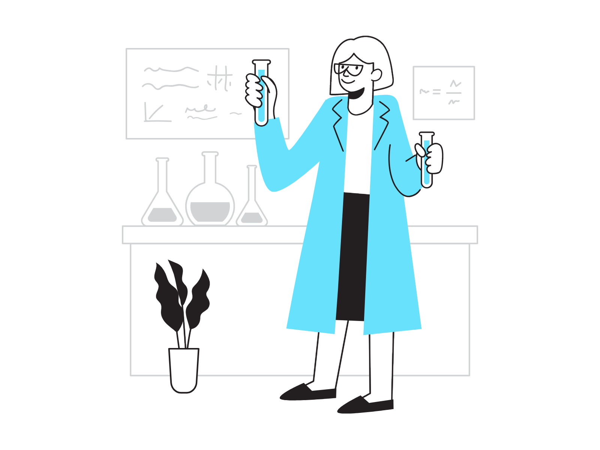

Contamos con tramientos naturales hechos a base de estractos de plantas medicinales.

Somos...
una corporación dedicada enteramente a su salud, nuestra prioridad es su bienestar y nuestra mayoir preocupación.

Contamos...
Con más de 15 años de experiencia y un personal capacitado, avalado por el Instituto Naturista Guatemalteco de Terapias Alternativas INGTA.

Tenemos...
Tenemos horarios flexibles, tarifas accesibles y una atención impecable, visítanos, la consulta es totalmente gratuita. Clínica Naturista William's Nature, donde tu salud es lo más importante.